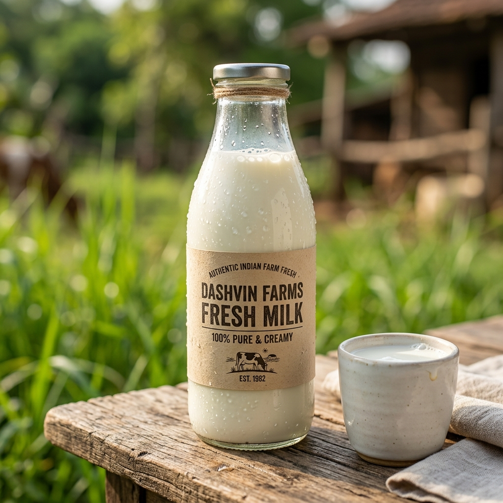
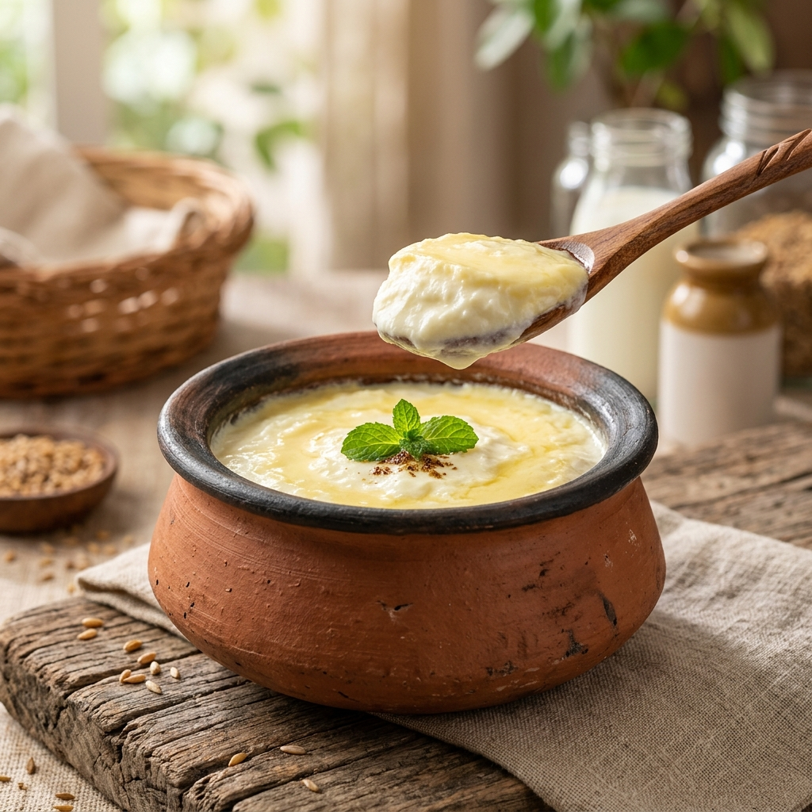

THE DASHVIN STORY
How a family commitment to unadulterated food blossomed into 10+ years of conscious dairy stewardship in the lush countryside.
A Promise Made to Our Own Children
A decade ago, our founders witnessed the rapid industrialization of dairy in Indian cities—where milk was reconstituted from chemical milk powders, stripped of natural fats, and transported in heated plastic packets.
We couldn't feed that to our own children. In 2014, we acquired pristine farmland outside the city, brought home our first herd of indigenous Gir cows, and vowed never to compromise on feed, animal welfare, or hygienic bottling. That family kitchen table became the founding ethos of Dashvin Farms.

RESPECTING INDIGENOUS WISDOM
Why we specifically nurture purebred Indian Gir cows and Murrah water buffaloes.

The Vedic Gir Cow (Bos Indicus)
Originating from the Gir hills of Kathiawar, the Gir cow is revered for its prominent hump and dewlap that naturally absorb sunlight. Unlike hybrid breeds, Gir milk naturally produces 100% A2 beta-casein protein, which is gentle on human digestion, reduces bloating, and enhances natural immunity.
The Resilient Murrah Buffalo
Prized for its creamy, rich milk with healthy natural butterfats. We use fresh Murrah milk to create our velvety set curd (dahi) and artisanal malai paneer that retains its moisture and cloud-like tenderness.
THE 5 STEPS OF VEDIC BILONA GHEE
Commercial ghee is made by boiling leftover cream. Our Ghee is crafted using the ancient 5-stage Ayurvedic churning ritual.
Morning Milking
Pure A2 cow milk is collected fresh and boiled in sterilized earthenware vessels.
Natural Culturing
Inoculated with heritage curd culture and allowed to ferment overnight into whole curd.
Bilona Churning
Two-way wooden churner separates pure probiotic makkhan (butter) from buttermilk.
Low-Flame Simmer
Slow-cooked over natural cow-dung firewood until golden aromatic solids separate.
Danedaar Gold
Filtered through cotton cloth into glass jars, setting into exquisite granular crystals.
LIFE AT DASHVIN FARMS
A glimpse into the daily peace, sunlight, and devotion that define our sanctuary.


